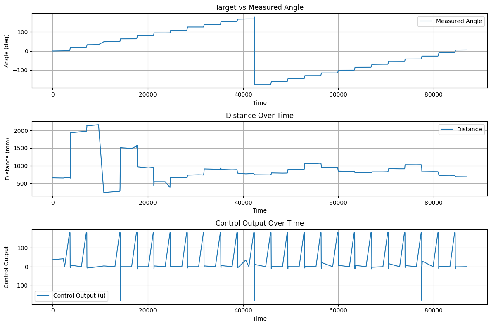
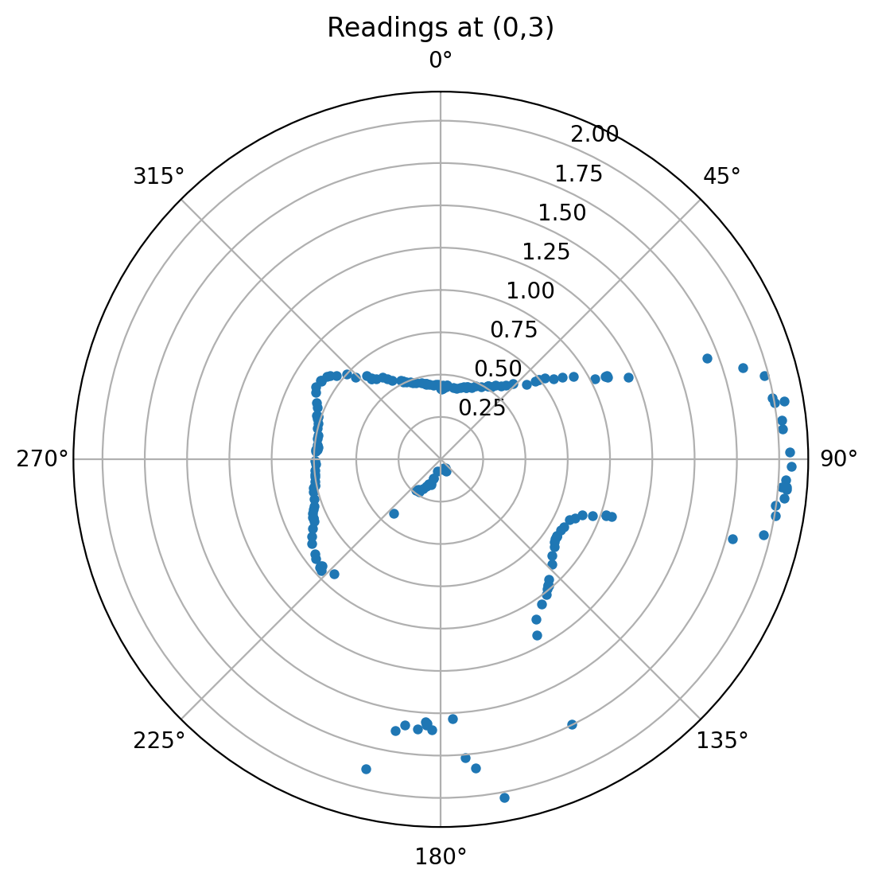
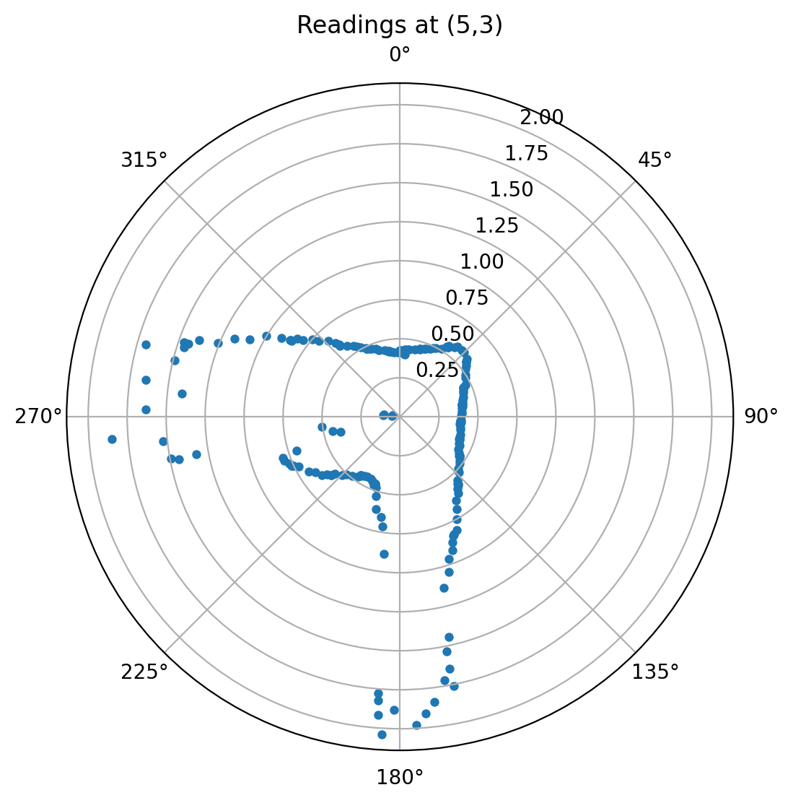
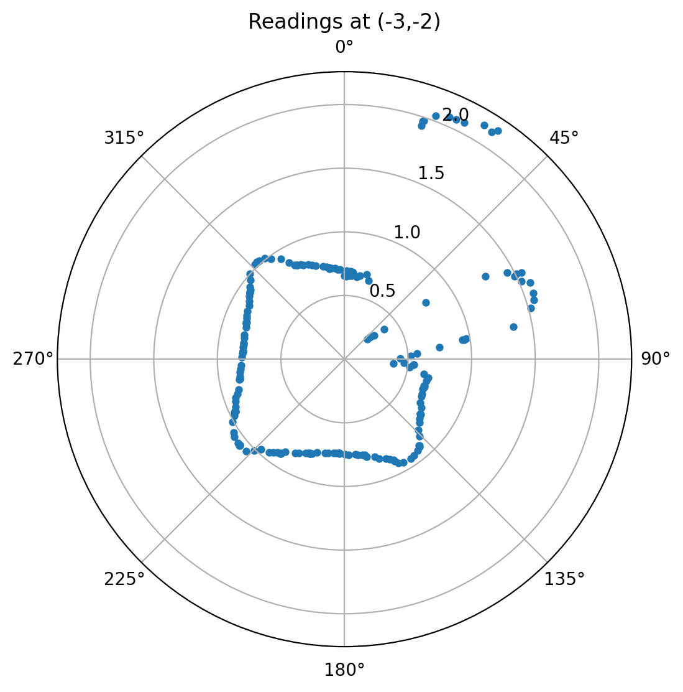
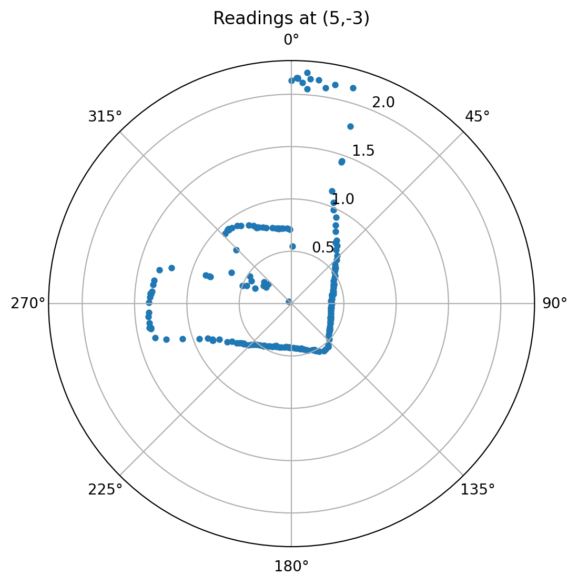
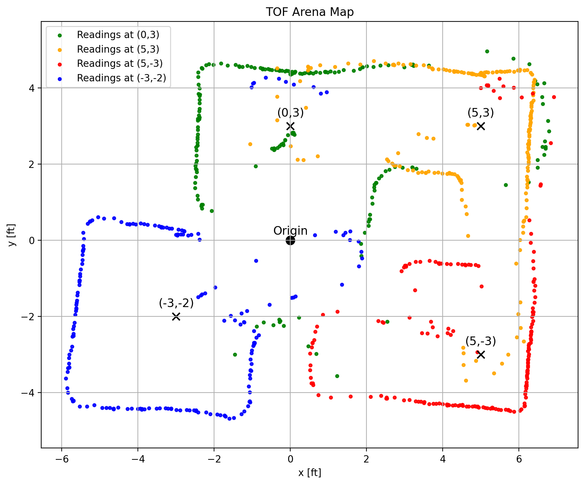
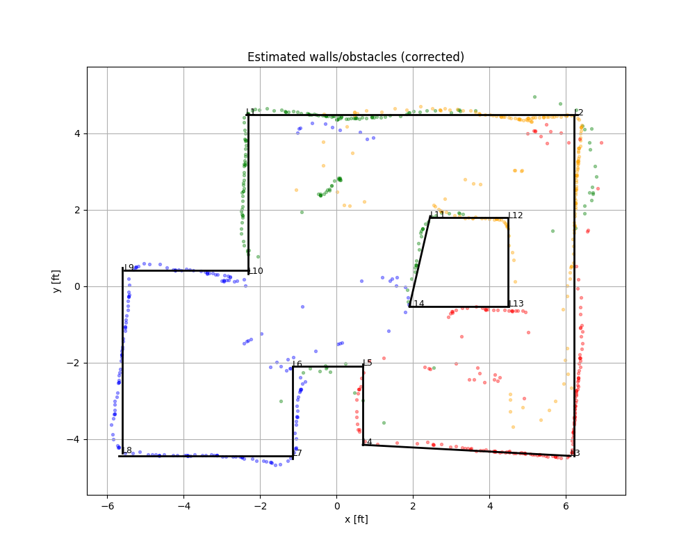

Objective
The purpose of this lab is to map out a static room (in this case, the front room of the lab). This map will be used in later localization and navigation tasks. To build the map, the robot is placed at several marked locations and rotates about its axis while collecting ToF readings.
Lab Tasks
Orientation Control Implementation
In this task, I used a PID orientation controller to perform accurate on-axis rotations. Since orientation PID control was implemented in a previous lab, it was straightforward to reuse it for controlled angular motion.
I set the robot to rotate in increments of 15 degrees. Therefore, a full 360-degree scan consists of 24 steps. To implement this, I created a MAP command case, which includes parameters such as PID gains and the stop time at each angle. I set a stop time of 1 second at each orientation to ensure sufficient data collection.
case MAP:
{
float Kp, Ki, Kd;
float step_deg;
int num_steps;
int stop_ms;
int max_step_time_ms;
bool ok = true;
ok &= robot_cmd.get_next_value(Kp);
ok &= robot_cmd.get_next_value(Ki);
ok &= robot_cmd.get_next_value(Kd);
ok &= robot_cmd.get_next_value(step_deg);
ok &= robot_cmd.get_next_value(num_steps);
ok &= robot_cmd.get_next_value(stop_ms);
ok &= robot_cmd.get_next_value(max_step_time_ms);
if (!ok) return;
stop();
delay(200);
calibrate_gyro_bias();
myICM.resetFIFO();
if (!init_yaw_zero()) {
Serial.println("Failed to initialize yaw zero");
return;
}
map_n = 0;
distanceSensorLeft.startRanging();
delay(50);
unsigned long scan_start_time = millis();
for (int seg = 0; seg < num_steps; seg++) {
float target_yaw = wrap_angle_deg((seg + 1) * step_deg); // compute target yaw for this segment
// Phase 0: turning to target
unsigned long seg_start = millis();
while ((millis() - seg_start < (unsigned long)max_step_time_ms) && map_n < MAP_DATA_NUM) {
float yaw_abs_now;
if (!read_dmp_yaw_latest(yaw_abs_now)) {
delay(1);
continue;
}
float current_yaw = wrap_angle_deg(yaw_abs_now - yaw_dmp_zero);
float yaw_rate = 0.0f;
if (myICM.dataReady()) {
myICM.getAGMT();
yaw_rate = myICM.gyrZ() - gyro_z_bias;
}
float pterm, iterm, dterm;
int u = pid_orientation_control(Kp, Ki, Kd,
current_yaw, target_yaw, yaw_rate,
pterm, iterm, dterm);
record_map_sample(scan_start_time, seg, 0, target_yaw,
current_yaw, yaw_rate, u); // 0 is to record the turning / target phase
float err = wrap_angle_deg(target_yaw - current_yaw);
if (fabs(err) < 5.0f) {
stop();
break;
}
}
// Phase 1: stop at target and record data
stop();
unsigned long stop_start = millis();
while ((millis() - stop_start < (unsigned long)stop_ms) && map_n < MAP_DATA_NUM) {
float yaw_abs_now;
if (!read_dmp_yaw_latest(yaw_abs_now)) {
delay(1);
continue;
}
float current_yaw = wrap_angle_deg(yaw_abs_now - yaw_dmp_zero);
float yaw_rate = 0.0f;
if (myICM.dataReady()) {
myICM.getAGMT();
yaw_rate = myICM.gyrZ() - gyro_z_bias;
}
record_map_sample(scan_start_time, seg, 1, target_yaw,
current_yaw, yaw_rate, 0);
delay(2);
}
}
distanceSensorLeft.stopRanging();
stop();
send_map_data_over_ble();
break;
}
The above code snippet shows the implementation of the MAP command case. The robot first turns to the target angle and then stops to record data for a specified duration. The PID controller is used to achieve accurate orientation control during the turning phase.
And the following code snippet shows how I sent the command from the client side to initiate the mapping process.
kp=2.5
ki=0.25
kd=0.32
step_deg=15
num_steps=25
stop_ms=1000
max_step_time_ms=2500
payload = f"{kp}|{ki}|{kd}|{step_deg}|{num_steps}|{stop_ms}|{max_step_time_ms}"
ble.send_command(CMD.MAP, payload)During the rotation, the robot continuously records the corresponding distance measurements. After completing one full rotation, the robot obtains a complete 360-degree distance profile for that location. The collected data is then transmitted via BLE for further processing.
The recorded video shows that the robot rotates in consistent small-angle increments and stops after completing the full 360-degree scan.
Data Analysis
After collecting the data, I analyzed one example dataset corresponding to the position (-3, -2). The measured target values exhibit a step-like pattern because the robot pauses at each fixed angle during rotation. The discontinuity in the angle plot is caused by mapping the angle into the range of -180 to 180 degrees.
By comparing both the measurement plots and the spatial visualization, it can be observed that between approximately 15 degrees and 60 degrees, the robot detects a relatively large distance, which matches the actual layout of the environment. For the remaining angles, the measured distances are stable and consistent with expectations.

Based on the experimental requirements, I generated polar plots for four different measurement locations. These results are clear and reasonably accurate.




Next, I combined the data from these four locations to construct a global map of the environment. I also estimated and visualized the boundary of the mapped area.


Overall, the reconstructed map shows a good alignment with the actual environment. Some minor deviations or tilting may be caused by measurement noise or slight errors in the initial positioning. We can see that the center box region can not be mapped accurately, maybe due to the limited field of view or occlusions. However, the overall mapping result is accurate and satisfactory.
Reference
Thanks to Professor Helbling and the TAs for their help during lab sessions. I refer to Wenyi Fu's and Lucca Correia's websites as guidance and as references for web design. I used Nano Banana Pro to help me with generating the cover of my lab, which is shown in the home page. I used AI tools to help me with refining the writing and improving the clarity of my report.
Note
In the report, I did not put some code implementations of simple functions and roughly duplicate parts. If necessary, please feel free to contact me.